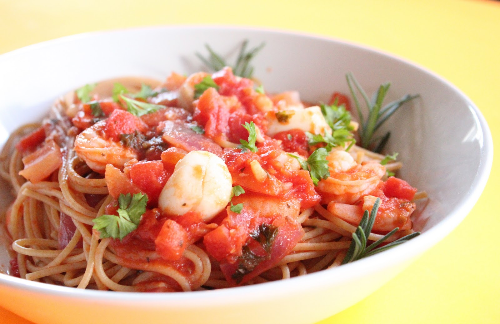

My Recipe Book
Made by Eric Wang
Pasta Recipe
A classic Italian pasta dish that's quick and easy to make
Ingredients
- 200g spaghetti
- 2 tablespoons olive oil
- 3 cloves garlic, minced
- 400g canned diced tomatoes
- 1 teaspoon dried oregano
- Salt and pepper to taste
- Fresh basil leaves for garnish (optional)
Instructions
- Cook the spaghetti according to the package instructions until al dente. Drain and set aside.
- In a large skillet, heat the olive oil over medium heat. Add the minced garlic and sauté for about 1 minute until fragrant.
- Add the canned diced tomatoes (with their juice) to the skillet. Stir in the dried oregano, salt, and pepper. Let it simmer for 10-15 minutes, allowing the flavors to meld together.
- Add the cooked spaghetti to the skillet and toss to coat the pasta evenly with the tomato sauce. Cook for an additional 2-3 minutes to heat everything through.
- Serve the pasta hot, garnished with fresh basil leaves if desired. Enjoy!